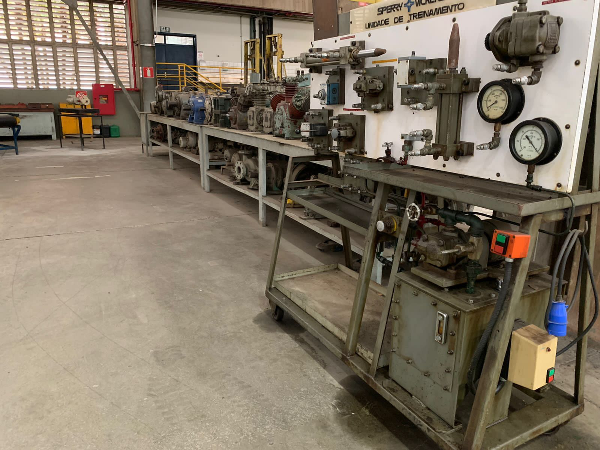
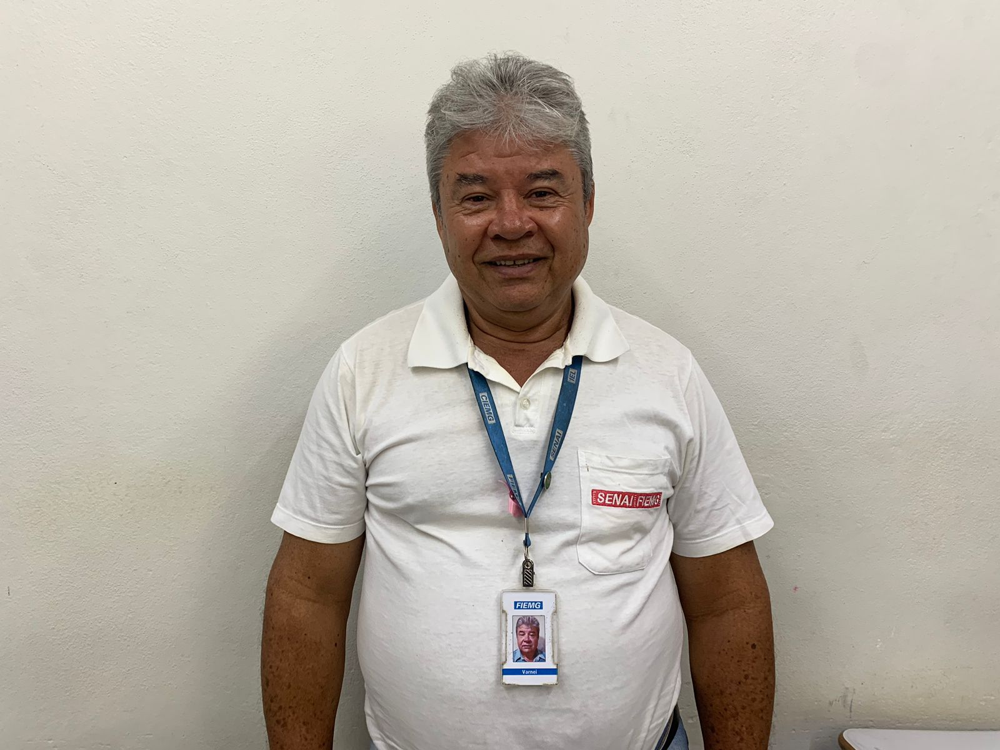

Técnico em Mecânica



Sobre o curso
O curso técnico em Mecânica do Inova Cursos proporciona uma formação sólida para profissionais capacitados a enfrentar os desafios do mercado de trabalho. Com foco em conhecimentos práticos e teóricos, o programa visa preparar os estudantes para se destacarem no setor da mecânica, englobando desde a manutenção industrial até a inovação tecnológica.

Turno: Noturno

Avaliação: 4.5/5

Duração: 18 meses
O Profissional
Mais do que apenas consertar máquinas, o técnico em Mecânica é fundamental para impulsionar o empreendedorismo e a responsabilidade social no contexto industrial. É essencial estar bem preparado, ser dinâmico e ter uma mentalidade inovadora para liderar com criatividade e competência no mercado de trabalho.

Diferenciais
Currículo atualizado, alinhado às demandas atuais do mercado, que proporciona uma educação técnica de qualidade.
Possibilidade de participar de programas de dupla certificação, ampliando suas oportunidades profissionais.
Experiências práticas por meio de simulações de ambientes industriais e jogos que estimulam o pensamento estratégico.
Oportunidade de aplicar seus conhecimentos em consultorias a pequenas empresas, proporcionando uma vivência real do mundo profissional.
Participação em Projetos Integradores que combinam teoria e prática, ampliando suas habilidades e competências.
Visitas técnicas a empresas para conhecer de perto os processos industriais e empresariais, enriquecendo sua formação.
Acesso ao Laboratório de Inovação e Soluções, onde você poderá apresentar soluções inovadoras gratuitamente, contribuindo para diversos tipos de negócios.